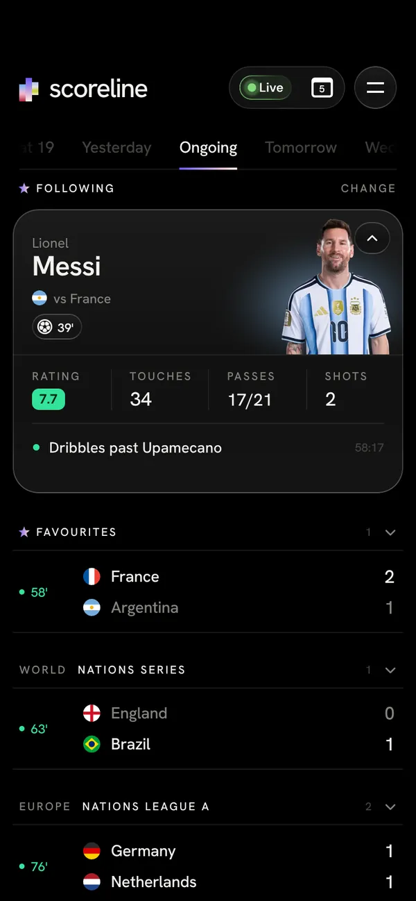
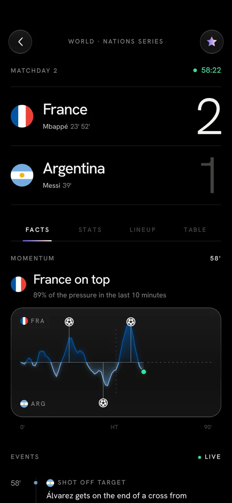
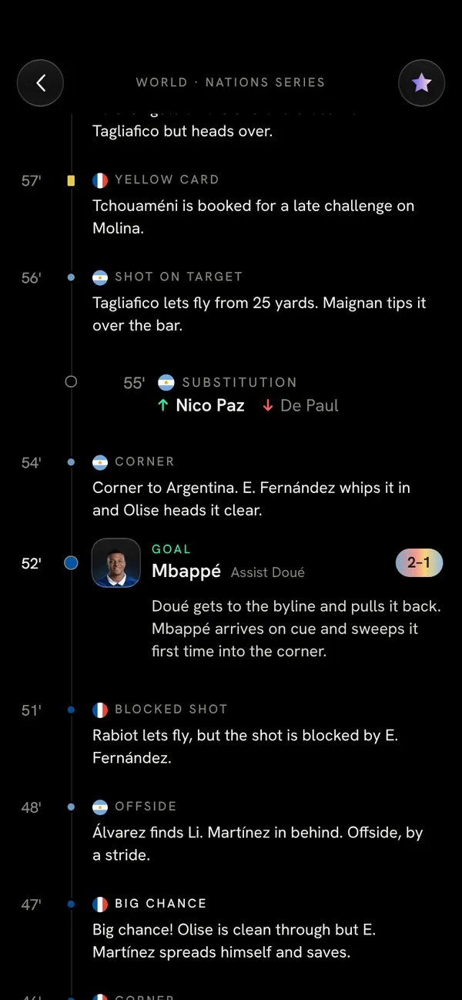
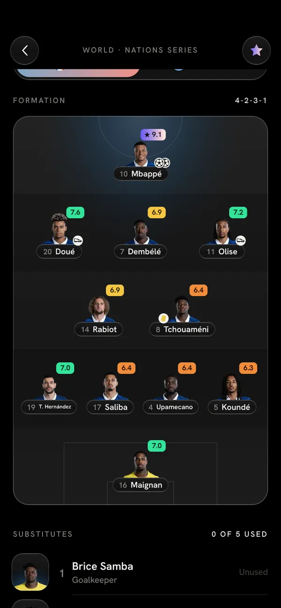
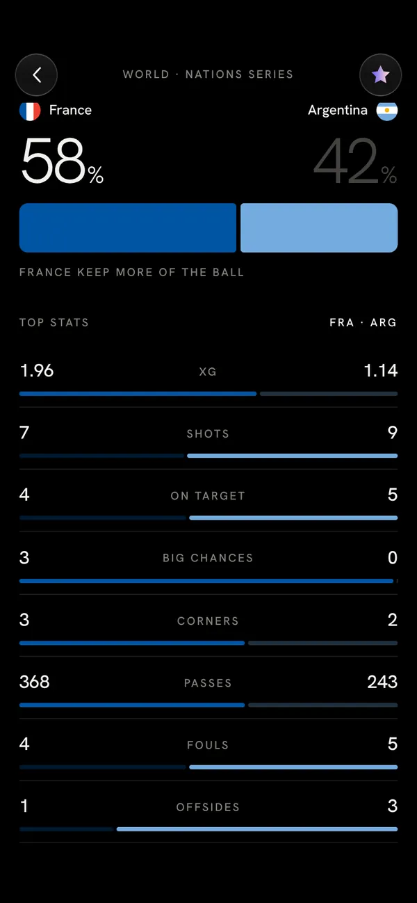
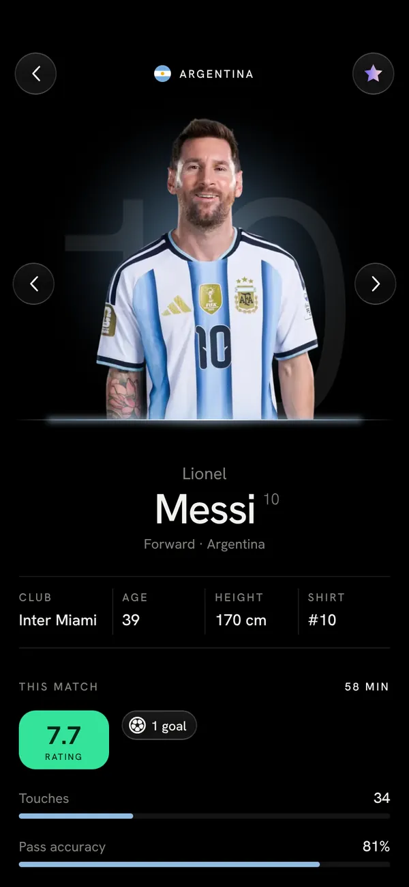
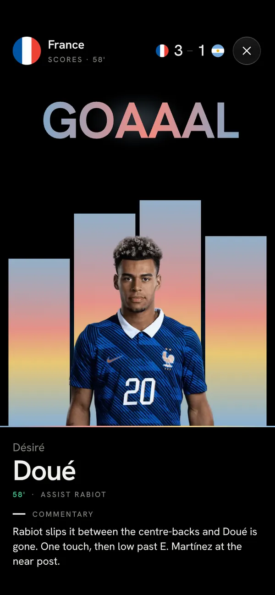

Scoreline is a live football app for match nights: five games at once, one Live switch, and a goal that arrives the way it does in the stadium. It’s also the first product I made entirely through AI, over hundreds of round trips in which I designed, directed, rejected and approved, and the AI wrote the code. I wanted full control, so nothing went in until I had decided it: the layout, the colours, every curve and every millisecond.
Product, design, motion and every decision by Turinoz. Code and execution by AI.
Scroll
01 — Roles
I directed. The AI built.
I’m a motion designer. Deciding how a thing looks, moves and behaves, and why, is the job. On Scoreline I did that job for a whole product and handed the typing to AI: Claude and Codex wrote 39,650 lines across 125 commits, and every one of them answered to a decision of mine.
Mine
Design & decisions
The product. What it shows, what it leaves out, and in what order.
The look. Pure black, five spectrum gradients, one grotesk, light numerals.
Every screen on phone, tablet and desktop.
Motion. Ten curves, fourteen section timings, the feel of every touch.
Rive. The Live switch and the goal and red-card words, built in the editor.
The rules. Nothing bounces. One word plays the headline. Nothing flies between screens.
Every review, on a phone, frame by frame. And what ships, what waits, what gets reverted.
AI’s
Code & execution
The app in React and TypeScript, ported from my Rive prototype value for value.
The demo evening: twelve fixtures, a live clock, goals, cards and subs.
The data contract and a stand-in backend for a real API.
817 unit tests and the browser checks that hold my numbers in place.
Performance: the first paint, the script budget, when Rive loads.
A fix for every note, until I said yes.
How one round went
125commits · 25+ AI sessions · 32 branches
Me
Decide
The look, the timing, the rule. Written down so it can’t drift.
AI
Build
The code, and a test that fails if my number changes.
Me
Review
On a phone, frame by frame. Screenshots, videos, notes.
Me → AI
Ship or redo
Back to build until I approve. Some things I reverted the next day.
02 — Origin
It started as one Rive file.
Before Scoreline was a web app, I designed the whole thing in Rive, running: every screen, the live simulation and the goal scene, drawn by one script on one canvas. That prototype is where every number on this page was set. Then I made the call to rebuild it.
My first product made through hundreds of AI round trips. I wanted full control over it, so every value lived where I could see it and tune it myself.
Then · Rive prototype
The whole app on one canvas.
One Rive file and one Luau script drawing everything: its own text, layout, scrolling, tweens and a match simulator. Every section exposed its timing as inputs in the editor, duration, delay, stagger and the four bezier handles, so I could tune the motion right there in Rive.
Script
8,925 lines of Luau
Rive file
824 KB, one artboard
Motion inputs I could tune
98
Before the first frame
≈ 3 MB
When idle
redraws every frame
Now · Web app
The same app, made of real parts.
React and TypeScript, with real text, links, a keyboard and a screen reader. Rive stays only where it earns its place: the Live switch, and the word that announces a goal.
Source
39,650 lines
Rive files
2 · 24.9 KB + 22.5 KB
First script
179.98 KB of a 180 KB budget
First frame
before any script runs
Rive
loads after the first data
No keyboard, no screen reader.A canvas is a picture. Nobody could tab to a match.
No links.You couldn’t send someone a match, or come back to one.
Text you can’t select.And names outside the baked glyphs simply didn’t draw.
Three megabytes first.Before the first frame, on a phone, on a match night.
2 October 2026 My call
Rebuild it as a web app, and keep Rive for the moments it’s best at. Port, don’t redesign: every colour, size and timing comes over exactly, and a test fails if one ever drifts.
03 — Decisions
Every decision has a reason.
Twelve of them, one at a time. The phone beside you is the real app, and it goes where each decision lives. Take control whenever you like.
01Product · Rive
Open on what’s happening now.
The app opens on Live, not on a calendar. The switch in the corner counts the matches in play, and one tap turns it off to show the whole day.
Goal
Answer “what’s on right now?” before anyone has to ask.
02Visual · Layout
Five matches, read at a glance.
Each live match is a card of light: the home side’s colour at the top, the away side’s at the bottom, both mixed toward warm white until black type reads on them. The card grows a pixel at a time as the minute climbs, and the minute is set big and light.
Goal
Show the state of five matches without anyone reading a single row.
03Product
Follow one player.
Pick a player and the list gives him a card of his own: what he’s doing right now, his rating, touches, passes and shots, and a moment of his own when he scores. The demo follows Argentina’s number 10.
Goal
Give people a reason to stay with a match they can’t watch.

04Data · Writing
A sentence before the chart.
Momentum is a wave in both teams’ colours, but it starts with a plain line: France on top, 89% of the pressure in the last 10 minutes. The goals sit on the wave as small balls that pop in one after another.
Goal
Say what the chart means before asking anyone to read it.

05Type
Big numbers, light weight.
The score is 86 pixels tall in Hanken Grotesk Light, tracked tight. The winning side’s number is white; the other one drops back to grey. It’s the biggest thing on the screen and it never shouts.
Goal
Make the score readable from across the room without making it heavy.
06Review note · SL-15
The scorer’s face, and no false promise.
A goal in the events shows the scorer’s photo. It used to show a kit disc and a chevron that promised a replay that didn’t exist. I asked for the face and no chevron. The photo now waits until it’s ready, so a disc never swaps for a face in front of you.
Goal
Only show what’s true, and never change it under the eye.

07Motion
The line-up rises line by line.
Forwards first, then midfield, defence and the keeper: 140 ms between lines, 35 ms between players in a line, each rising 26 px on GLIDE. You read a formation the way you’d point at it.
Goal
Make the shape of a team readable in the time it takes to appear.

08Motion · Data
Stats that start from the middle.
Possession counts out from 50, and each bar opens from the centre a beat after the one above. Nothing starts from zero, because no match does.
Goal
Show the balance first, then how far it has tipped.

09Motion · Review 4 Oct
Nothing flies between screens.
The first build flew logos and faces from the card you tapped to the next screen. On a phone they seemed to come from the middle of nowhere, so after my review on 4 October they went. A match slides in from the right; a player grows in place from 90%, the same way from everywhere.
Goal
Keep people oriented. Motion should explain where you are, not perform.

10Moments · Rive
A goal is a scene, only where you’re looking.
If the goal is in the match you have open, or your player scores, it takes the whole screen: GOAAAL lands letter by letter in the team’s colours, a wall of light rises, the scorer comes up and the commentary writes itself in. Anywhere else it’s a quiet toast, and three at once fold into one summary.
Goal
Celebrate the moment without punishing people for looking elsewhere.

11Material · Touch
Light only where you touch.
Controls are dark glass with a one-pixel rim that’s brighter at the bottom. Hovering lights a small spot under the cursor, never the whole button, and a press dips it by 5%. Live cards never lift, and there’s no blur anywhere: frosted photos are files, blurred once.
Goal
Make it feel physical, and keep it fast on a phone.
12Layout
Three panes on a desktop, not a stretched phone.
From 1200 px the app becomes three panes: the list, the match, and a third for the player, the tables or tonight’s leaders. From 768 px it’s two. Each pane scrolls on its own, and the list never loses its place.
Goal
Use the space to show more at once, not the same things bigger.
The look is small on purpose. Pure black for the night, five gradients for everything that’s alive, and one grotesk in five weights. Every value came from my prototype and lives in one tokens file.
The third one is the accent: the tab line, the chosen segment, and this page’s progress bar. In the app, live cards take the two teams’ own colours on the same recipe.
Inks
Ten colours, and a rule for the rest.
Background#000000
Surface#161616
Glass#121212
Text#F3F2EF
Muted#85847F
Dim#43423F
Live#34E39A
Yellow card#E7C94A
Red#FF5A5A
Pastel base#F7F2EA
Team colours are mixed toward the pastel base until black text on them passes WCAG AA comfortably. That one rule lets any two teams share a card.
Type
Light for numbers, bold only for GOAAAL.
58’Light 300 · 86 px · −0.05 em · the scoreMessiMedium 500 · 26 · namesGOAAALBold 700 · 46 · one wordLive now500 · 10.5 · +0.16 em · labels
Weight
Hanken Grotesk, self-hosted. Twenty-one sizes, from 8 to 86 px, every one from the prototype, so text sits on the same baselines it did in Rive.
Material
Dark glass, lit from where you point.
LiveContinue with email
An opaque pane at 96%, a whisper of sheen, and a one-pixel rim at 0.22, 0.13, 0.15 and 0.28 white from top to bottom. Point at them: the light rises in 280 ms and fades in 550, where you left it. Press: a 5% dip in 120 ms, back in 500.
no backdrop-filter·light only with a real pointer·a quick tap still shows the whole dip
05 — Motion
Every curve, set by hand.
Ten curves run the whole app. I set them in the Rive prototype, where every section had its own duration, delay, stagger and four bezier handles to tune. The web app carries them over number for number. Here they all are, next to their four numbers, each against the browser’s default in grey.
No curve overshoots. Movement settles, it never bounces.My one rule for motion written at the top of the tokens
Glide--ease-glide
ease
X10.16Y11X20.3Y21
The landing. Out of the gate at once, then a long quiet arrival. It’s the expo-out shape, chosen on purpose, and 11 of the 14 sections land on it.
The quick one. A steep start and a shorter tail, for what follows your finger: the day tabs, the tab line, a press going down.
listtabspress dipsheet closingflashes
Player--t-player-ease
ease
X10.32Y10X20.1Y21
The focus pull. A slow start and a soft, sudden finish, so a player grows in from 90% like a camera finding him.
player viewbust 0.9 → 1player sheet
Landmoments
ease
X10.12Y11X20.3Y21
The goal word. Each letter of GOAAAL comes in big and soft and lands sharp. LAND gets there sooner than GLIDE, so the letters feel thrown.
GOAAAL lettersword settlewall of light
Slammoments
ease
X10.5Y10X20.9Y20.6
The red card. All in, no landing. It hits and stops dead at 2.8× to 1×, and the shake does the rest.
red card slam
Roll--ease-roll
ease
X10.7Y10X20.2Y21
The letter roll. A hard pull and a clean drop. Each letter of a pressed label rolls up and comes back from below, 420 ms each, 11 ms apart.
letter rollpressed labels
In-out--ease-inout
ease
X10.42Y10X20.58Y21
The classic, kept on purpose for things that come and go on their own: a flood of team colour fading out, a countdown digit rolling over.
colour floodscountdown digitflare fading
In--ease-in
ease
X10.5Y10X20.75Y20
The exit. Only one thing leaves on it: a goal toast flying up past the top, in 0.32 s.
toast leaving
Breathlive dots
ease
X10.37Y10X20.63Y21
The pulse of a live dot. It stands in for the prototype’s ½ + ½·cos 4t, so a ring breathes instead of blinking, 785 ms each way.
minute dotfacts dotplaying now
Linear--ease-linear
ease
X10Y10X21Y21
Honest motion for things that aren’t easing: the Live dot’s ring growing over 1.8 s, and keyframes already shaped frame by frame.
Live ringbaked keyframes
Fourteen sections, fourteen rhythms.
Each part of the app has its own duration, delay and stagger. Pick one and it plays here with its exact numbers. Most share a curve; none share a rhythm.
SectionDurDelayStaggerCurve
Cards
Touch, at the scale of a finger.
The smallest tier of motion is the one you feel most. These three run on the app’s exact values. Try them.
Hover light
A spot, not a glow.
The light rises under the cursor and stays where you left it as it fades. Never the whole button.
Point here
rise280 ms · Glide
fade550 ms · Glide
spot radius26 px
Press
A dip you can see, even on a quick tap.
Down in 120 ms, back in 500. The release waits for the dip to reach the bottom, so even a flick shows the whole press.
Press me
down120 ms · Ease
back500 ms · Glide
depth5% · labels 4%
Letter roll
Labels roll, one letter after another.
On a press, never on hover. And a tab you’re already on doesn’t roll again (review note SL-11).
each letter420 ms · Roll
between letters11 ms
indicator500 ms · Ease
Mine against the default.
The browser’s ease is a fine curve, and it’s nobody’s decision. Race any of mine against it at the same duration.
DefaultCSS ease0.25, 0.1, 0.25, 1
Glidemine0.16, 1, 0.3, 1
06 — Rive
Two Rive files, built by me in the editor.
Rive draws only what it’s best at. Both files are mine, from the editor, and the app talks to them through view-model properties and nothing else. Here they are running live, outside the app. Play with them.
Same runtime as the rest of this portfolio. The canvases sleep when they’re off screen.
Rive · live-icon.rivislive = true · count = "5"
The Live switch needs WebGL 2 to draw here. It runs inside the demo phone either way.
Rive 01 · The Live switch
A switch that gathers itself.
Turning Live on, the capsule first draws in a little, opens past its mark and settles back. Turning it off, it swells first, then closes. It’s the only thing in the app allowed to overshoot: I animated it by hand in the editor, and wanted it to breathe rather than snap.
State machine
idle → live 633 ms · live → idle 783 ms
View model
islive · count
Size
capsule 40 px, the menu button’s height
Off, at rest
my OFF artwork
The capsule, measured from my timelineopening · 633 ms
Read from the export frame by frame. The hover light in the app replays this exact track, so its rim never runs ahead of the capsule.
243.7 KB whole font inside
23.6 KB helper artboard only
26.8 KB accepted, then replaced
24.9 KB shipped
Rive · moments.rivphase 0
The goal word needs WebGL 2 to draw here. Score a goal in the demo phone to see it in the app.
Rive 02 · Moments
GOAAAL, letter by letter.
Each letter comes in big and out of focus and lands sharp, one after another, while the word settles from a touch larger. When the last one lands, a soft flare blooms and a glint crosses it. The colours are the scoring team’s, made pastel. A red card slams in instead, in fixed reds.
play 0 slast letter lands 0.854 s · phase 1flare and glint done 1.677 s · phase 2
Six letters, 70 ms apart, each landing in 504 ms on Land.
Artboard
390 × 340, one Node Script
View model
kind · color1 · color2 · play · phase
Letters
1.85× → 1 on Land, 70 ms apart
Red card
1.4× → 1, 60 ms apart · phase 1 at 1.12 s
In the app
one warm copy, lent to every scene
07 — Process
Seven days, four review sessions, one decider.
01 / 08
2 Oct · Me
The prototype goes in.
I hand over the Rive app: the script, the file, the data binding notes. The look is approved. The platform isn’t.
8,925lines of Luau, one canvas, all of it mine to tune
2 Oct · AI
A plan in twenty-two parts.
The architecture and a build plan, ten minutes after the upload. My rule sits at the top of it: port, don’t redesign.
Rule 2 · Copy the numbers: sizes, radii, colours, timings.Rule · Don’t reopen its decisions.
2–5 Oct · AI, in parallel
Parts 1 to 21.
One AI session per part, often several at once: the larger model where a wrong call is expensive, faster ones for porting with a clear spec. Each part ends with a report and waits for my review.
21parts built, each one checked before it merged
4 Oct · Me
My review.
Fifteen annotated screenshots and three videos. The flights between screens go. The goal word stops shaking. The Live capsule matches the menu button.
“the logos come from the middle of the page”“GOAAAL shook”“the capsule, not the artboard, is 40 px”
3–6 Oct · Me, in the editor
Back in Rive.
I rebuild the moments file and re-export the Live switch until it fits the budget and the app: four exports, two of them rejected.
243 → 25KB for the Live switch, the font cut to the glyphs it uses
5–6 Oct · AI
The audit.
Every budget I set, measured. Eleven issues filed against its own work. The first frame now paints before any script runs.
0.76 sfirst paint, simulated mobile (was 2.26 s)
8–9 Oct · Me → AI
Sessions 1 to 4.
Four polish rounds against my review notes, each one a ticket with a number.
SL-15 · the scorer’s photo, no chevronSL-16 · centre the folded copySL-11 · a chosen tab doesn’t roll againSL-10 · swipe back, and between daysSL-18 · a review page for clients
9 Oct · Today
A demo you can open anywhere.
Ready for a real data feed, honest about what isn’t done. It’s running on this page.
817unit tests holding it in place
fix(motion): no more one-pixel jumps when cards grow and blocks landfix(moments): the goal word never swaps mid-flightfix(rive): hover light rides the capsulefix(motion): slides drawn between pixels, no hold and no jump when they landfix(scroll): hold the hover while the wheel moves a pagefix(moments): Rive word draws its own rise, no jitter at the topfix(match): goal row shows the scorer’s photo and no chevron SL-15fix(ui): collapsed Your player copy centred SL-16fix(moments): the goal flag keeps its distance from the word on shorter phones SL-09fix(motion): no more one-pixel jumps when cards grow and blocks landfix(moments): the goal word never swaps mid-flightfix(rive): hover light rides the capsulefix(motion): slides drawn between pixels, no hold and no jump when they landfix(scroll): hold the hover while the wheel moves a pagefix(moments): Rive word draws its own rise, no jitter at the topfix(match): goal row shows the scorer’s photo and no chevron SL-15fix(ui): collapsed Your player copy centred SL-16fix(moments): the goal flag keeps its distance from the word on shorter phones SL-09
feat(live): the supplied OFF artwork is the Live button with Live off SL-19feat(motion): no shared-element flights; the player grows in at the centrefeat(layout): pages pull past their edges under a finger, as in the Luaperf(feel): a tap paints the screen’s shell firstfix(demo): player and team statistics agree SL-20SL-10: swipe back from the match screen and between adjacent daysSL-18: client review page with a phone preview of the running demofix(live): open on Live, no second Live design before the artperf(moments): one warm Rive goal word, borrowed by every scenefeat(live): the supplied OFF artwork is the Live button with Live off SL-19feat(motion): no shared-element flights; the player grows in at the centrefeat(layout): pages pull past their edges under a finger, as in the Luaperf(feel): a tap paints the screen’s shell firstfix(demo): player and team statistics agree SL-20SL-10: swipe back from the match screen and between adjacent daysSL-18: client review page with a phone preview of the running demofix(live): open on Live, no second Live design before the artperf(moments): one warm Rive goal word, borrowed by every scene
Real commit titles from the project. Each one is a round trip: a note from me, a change from the AI, a check from me.
08 — Build
A working demo. Not finished, and honest about it.
The technical version: the demo runs a whole simulated evening, and the app is built to plug into a real data API. It isn’t a finished product yet. Here is exactly where it stands.
scoreline / status
>> scoreline status├─demoa whole matchday, simulated✓ runs anywhere├─?apireal feed + live events (SSE)✓ wired, tested├─stand-in apithe same evening, as an API✓ local├─contractv2, validated on arrival✓├─tests817 unit · 31 browser cases✓ passing├─first script179.98 of 180 KB✓ in budget├─load (LCP)2.2 s, target 2.0 s~ close├─providernot chosen yet○ next└─devicesno physical-phone pass yet○ next// demo: ready. product: not yet.
Works today
The whole demo evening: live clocks, goals, cards, subs, goal scenes and toasts.
Real-API mode: polls the feed, follows live events over SSE, backs off and catches up after a gap.
A stand-in backend that serves the demo as an API, to prove the wiring end to end.
Phone, tablet and desktop layouts, a keyboard path, reduced motion.
Not yet
A real data provider, and the small server that keeps its keys.
Accounts. The sign-in sheet is a mock-up; nothing is sent.
Speed on a mid-range phone: load is 2.2 s against 2.0, and not every tap is under 200 ms.
Physical phones and screen readers. Everything so far ran in browsers.
39,650lines of source, all written by AI
817unit tests, passing
125commits across 32 branches
7days from the prototype to this demo
09 — Try it
It’s all live. Try it.
The phone on this page is the real app, running its demo evening. Score a goal, show a red card, open a match, follow someone else.
Product, design, motion, Rive, every review and every yes.
AI · Code & executionClaude & Codex
The app, the tests and the performance work, written to my brief and changed until approved.
What I’d keep from this one: AI can write the code, fast and well. Deciding what it should feel like, and saying no until it does, is still the job. On Scoreline it was mine.
Product & UX
Turinoz
Visual design
Turinoz
Motion design
Turinoz10 curves, 14 section timings
Rive
Turinozthe Live switch and Moments, in the editor
Direction & review
Turinozone full review, four polish sessions
Code & tests
AIClaude (Opus, Sonnet) and Codex
Stack
React 19, TypeScript, ViteMotion, Zustand, Zod, Rive